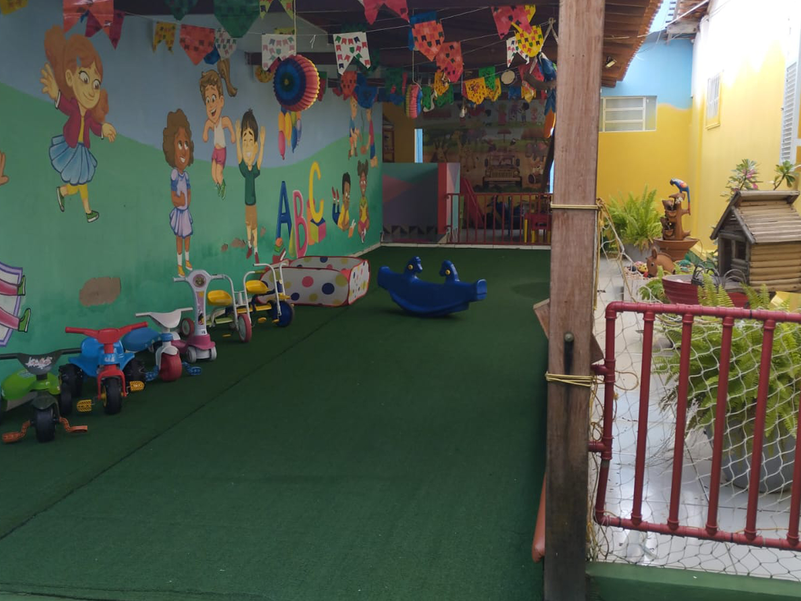
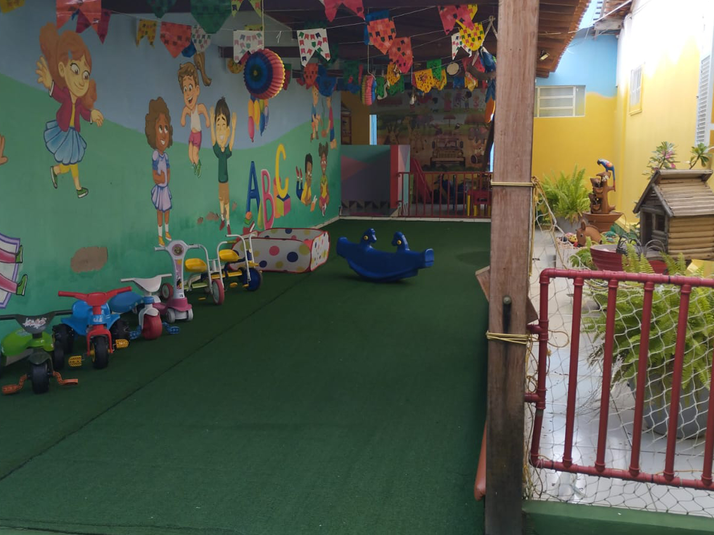

A Escola Turma da Mônica é uma instituição de caráter particular com uma trajetória de 7 anos de bons serviços prestados a comunidade de Paulo Afonso.
Em maio de 2016 nasceu a Escola Turma da Mônica, fundada com 9 alunos, tendo como foco o atendimento de crianças de 9 meses a 5 anos de idade.
Desde então praticamos uma pedagogia que objetiva conduzir todos os cuidados e necessidades que cada etapa do desenvolvimento infantil exige, sempre priorizando a aquisição das habilidades básicas, a leitura e a escrita com um processo de amadurecimento individual e coletivo.
As principais tarefas da Escola: Cuidar e educar. A importância das duas é mostrar o quanto uma depende da outra.

Mônica Siqueira
Pedagoga


 
